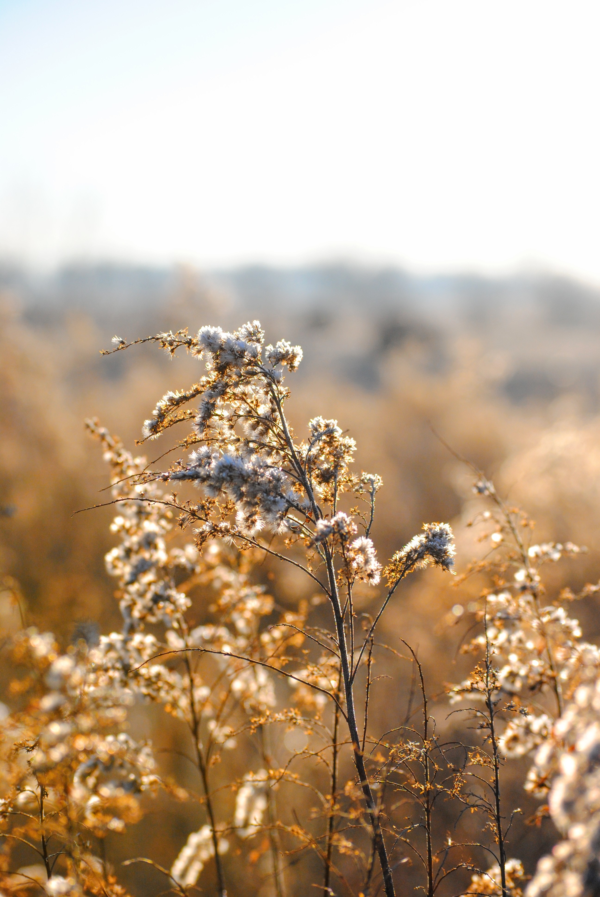

La Sapinière
Le sarrasin est une plante robuste. On la cultive naturellement, sans intrants ni traitements sur une des parcelles en agroforesterie.
L'agroforesterie est un mode de production agricole associant des plantations d'arbres à d'autres cultures.
Cette technique favorise la biodiversité et maximise les productions en faisant jouer les synergies engendrées. C'est ainsi que le sarrasin est semé parmi des poiriers francs, des acacias, des merisiers, alisiers et cormiers...
Le grain récolté en Octobre est séché et trié par la coopérative agricole. Au printemps, quand l'humidité a diminué, il a pu être moulu au Moulin à Elise, moulin à eau du Poiré-sur-Vie, avec une meule en granit aiguisée depuis peu... qui donnait un petit goût d'étincelle de silex ?
Merci aux bénévoles de l'association qui font vivre ce moulin.
Depuis 2018, certification AB oblige, le grain est "écrasé" à la Meunerie de Nieul.
La farine fraîchement moulue est ensuite rapatriée à la Sapinière où elle est mise en sac.
On a des fraises pour quelques semaines en début de printemps. Les deux kiwis ont commencé à produire. On en distribue dans un ou deux paniers d'hiver.
Les fruitiers (pommiers, poiriers, abricots et cerises) plantés en 2015 seront aussi sollicités dès qu'ils produiront suffisemment. On a planté 30 pommiers rustiques pour pommes à couteau en 2018. Ils devraient donner des fruits en 2022 ! J'ai le projet de me former pour les conduire en biodynamie d'ici là. Et en 2019/2020, 30 pommiers à cidre démarrent, toujours en agroforesterie. A priori, il faut attendre 8 ans pour une production correcte de cidre.
Une trentaine de poules pour les oeufs, et le fumier ! On prévoit ça pour fin 2019, quand on sera bien installé sur place, et qu'on aura trouvé du soutien à qui confier la serre quand on voudra partir quelques jours.
Chaque année nous faisons quelque bouteilles de champagne de sureau. On garde en bouteille le parfum de premier printemps des fleurs de sureau !